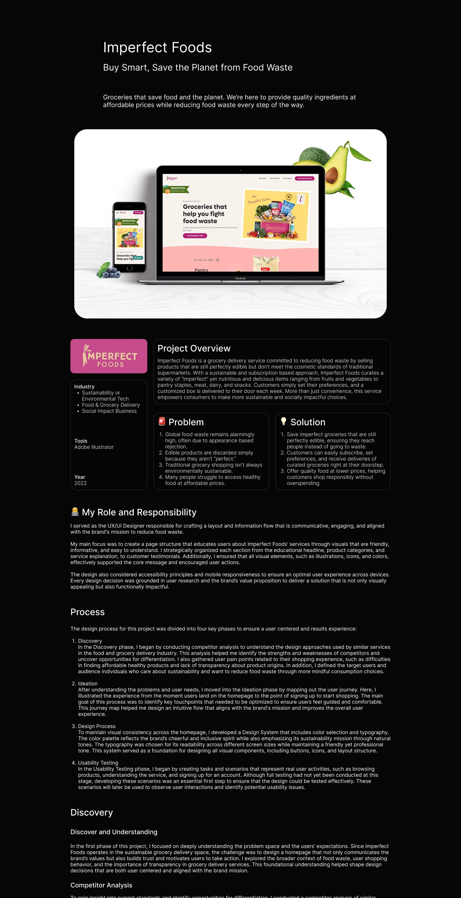
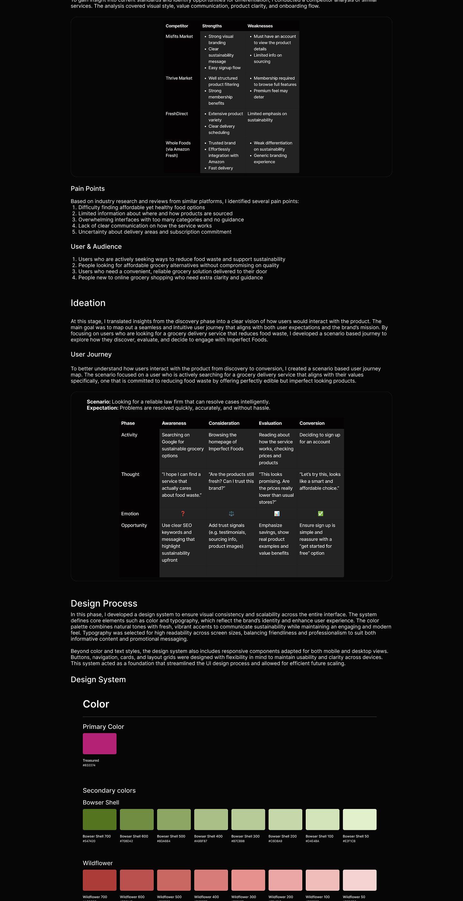
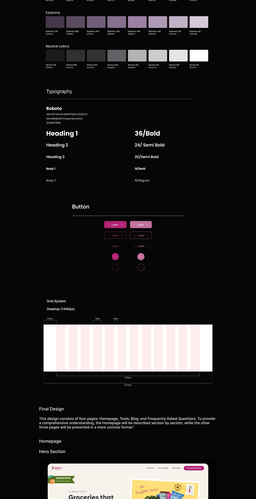
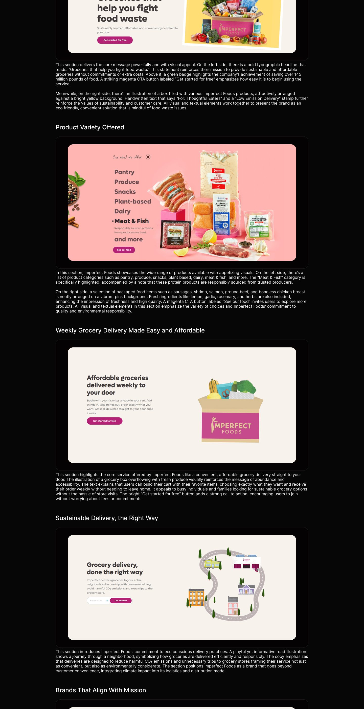
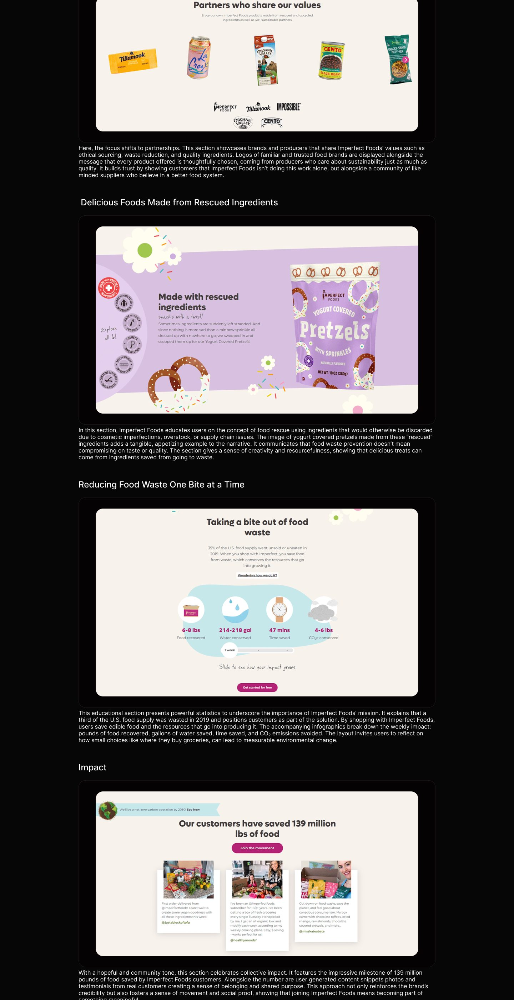
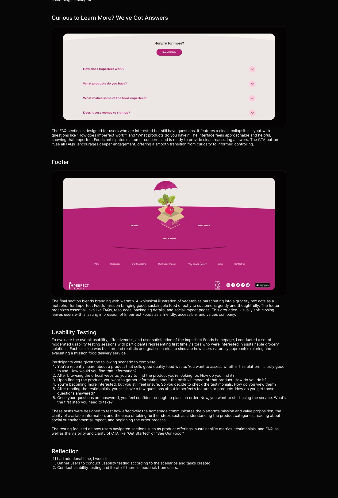

Mobile commerce
Imperfect Foods
A grocery experience for produce that would otherwise go to waste.
Overview
Imperfect Foods delivers groceries that fight food waste. This concept reworks the mobile shopping experience: browsing, box customization, and checkout, in a warm system that keeps the mission visible without slowing down the weekly order.
The case study documents the flows and screens end to end, with attention to how the brand's playful tone survives contact with a utilitarian task.
Inside the case study
- Research and heuristics
- Shopping flows
- Box customization
- Checkout screens
- Mobile UI system
- Annotated design decisions
The case study
The full annotated board: research, flows, explorations, and final screens.





